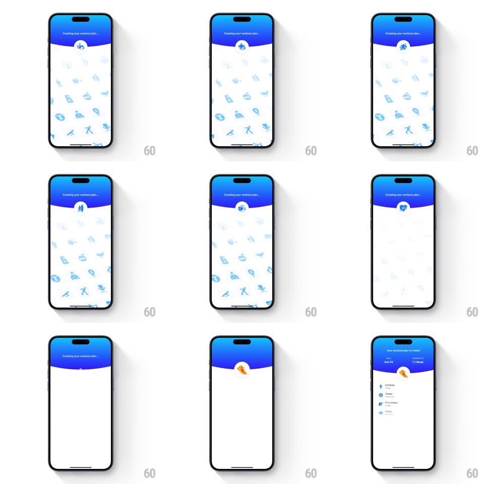

Media
Frame-by-frame

Rebuild this interaction 1:1: Seven's plan-creation loader - "Creating your workout plan." over a blue wave header while a grid of activity icons streams upward and a central circular badge cycles through exercise glyphs, then morphs into the ready state ("Your workout plan is ready! Get Fit - 7 Week").

Rebuild this interaction 1:1: Seven's plan-creation loader - "Creating your workout plan." over a blue wave header while a grid of activity icons streams upward and a central circular badge cycles through exercise glyphs, then morphs into the ready state ("Your workout plan is ready! Get Fit - 7 Week").
## Integration
Integration: stack-agnostic spec - springs given as stiffness/damping, timed motions as duration + curve; map every value to your framework and animation library of choice.
## Scene
White screen, curved blue header ("Creating your workout plan." with an ellipsis that animates), a central white circular badge straddling the wave, and behind it a loose grid of light-blue activity icons (bottles, weights, poses) filling the body.
## Motion spec
Pattern: streaming icon field with morphing progress badge.
- The icon grid scrolls continuously upward (~40px/s), icons drifting with slight per-column offset; opacity ~25% so they read as texture.
- The center badge cycles through activity icons every ~600ms (crossfade 200ms with a slight scale pulse 1 -> 1.1).
- On completion: the icon grid fades out (300ms), the badge's glyph becomes a white check on orange with a spring pop (scale 0.7 -> 1.1 -> 1, ~350/18), the header text crossfades to "Your workout plan is ready!", and the plan summary rows (goal, duration) slide up staggered 120ms apart.
## Calibration
- The loader runs at least one full badge cycle even if the data is ready sooner - never flash it.
- Icons are single-weight line art, always the same light blue.
## Reduced motion
Static icon grid; badge crossfades only.
## Don't miss
- The badge sits exactly on the wave seam, half over blue half over white - it needs a white ring to stay legible.
- The transition to ready is a morph, not a screen swap.